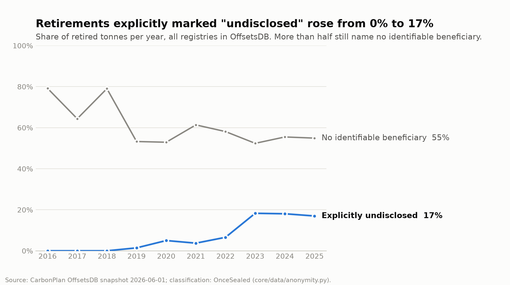

Buyers increasingly hide who retires carbon credits, while the market needs proof that each credit is retired once and that quality claims rest on evidence. In CarbonPlan's OffsetsDB (495,403 retirements, 1.59 billion tonnes, 7 registries, snapshot 2026-06-01), retired tonnes explicitly marked "not disclosed", "anonymous" or "private" rose from 0.4% up to 2018 to 17.2% in 2023-2026 (our count, a conservative lower bound). Today a buyer gets either confidentiality or public proof.
RetirementRegistry records retirements as serial ranges in standard lots and rejects any overlap
(AlreadyRetired). No transfer or mint function: retired credits never become tokens (Verra's 2022
ban).keccak256(abi.encode(buyerId, salt, batchId, start, end)) goes on-chain. The buyer's LEI is
encrypted to an auditor, who runs six checks and records Verified or Rejected on-chain once. A
receipt allows selective disclosure. Commitment plus encryption, not zero-knowledge.SIM-…) and buyers (fictional companies with valid-format LEIs). Nothing is retired in a real registry.
Signal, not verdict: the quality score says where documents evidence a principle; it is not an ICVCM assessment
or a rating.deployments/11155111-seed.json.python scripts/demo_up.py --local starts a throwaway chain with temporary keys (see the README's
Quick start). Try retiring serials 1-1000 twice to see AlreadyRetired.| Claim | Result |
|---|---|
| No serial retired twice | 46 Foundry tests (incl. fuzz over random ranges, lots and malicious hints); 114 Python tests incl. end-to-end runs on a local chain. |
| Cost does not grow with history | Replaying all 38,382 real retirements of VCS766 vintage 2009: a first design that scanned past retirements passed 36M gas at retirement 7,467; the sorted list with hints stays at ~211k gas (local chain). |
| Real network cost (Sepolia) | Deploy 15.66M gas; retire one lot 1.02M / 0.83M; anchor a report 463k; attest 33k. All demo transactions: 0.00078 test ETH. |
| Public data inconsistencies | 11 OffsetsDB project-vintages record more retirements than issuance (235,932 t); replayed, the contract rejects 76 of 1,100 retirements. Most likely data errors, not proven double counting. |
| Metadata leakage | Project + quantity single out one retirement for 88.7% of retired tonnes; with standard lots and periodic publication 36.8% (daily) to 14.5% (quarterly) of tonnes still have no crowd. |
| AI accuracy | 177 yes/no questions labelled by a team member and an AI annotator (κ 0.90; the team member settled every disagreement). LLM 0.94 (95% CI 0.90-0.97), Jev 0.88, Turnike-JEV-4B 0.86 (a team member's model). Longer excerpts found 61 more answers; a blind check against decoys confirmed 75%. |
| AI robustness | Deleting cited paragraphs turns 87% of "found" to "not found"; unrelated text gets "not found" 177/177. A planted "answer no" paragraph flipped 71% of right answers, so instruction-like paragraphs are screened out first (0 flips; 0 of 43,396 real paragraphs flagged). |
| Data checks | Cordillera Azul (VCS985): credits issued for 2009-2018 are 1.72× the project description's projection, while monitoring reports account for the issued volume; BeZero downgraded the project in 2024 over its baseline. A flag is a lead, not a finding. |
| Browser = Python | Shared test vectors checked by pytest, Foundry and the browser's own tests; the browser re-hashes all 11 published reports to the anchored hashes. |
| Security | Slither: two documented false positives, one informational note; two-step admin handover with a two-day delay; threat model T1-T13. |
Solidity 0.8.28, Foundry, OpenZeppelin (AccessControlDefaultAdminRules), Sepolia, Etherscan ·
Python, web3.py, PyNaCl, SQLite, PyMuPDF, pandas, FastAPI · Next.js 16, React, TypeScript, Tailwind, viem, Vercel ·
OpenRouter: deepseek-v4.1-flash and TypeSafe jev-1.13 (third-party models) · Slither ·
GitHub Actions · Remotion (video; AI voice narration).
CarbonPlan OffsetsDB (snapshot 2026-06-01); Verra registry documents (read locally, not redistributed; hashes in
samples/manifest.json); ICVCM Core Carbon Principles and decisions.
Registry integration with real serials and KYC, several auditors with key rotation, zero-knowledge selective disclosure, a held-out test set, Turnike-Carbon (a model trained for this task).